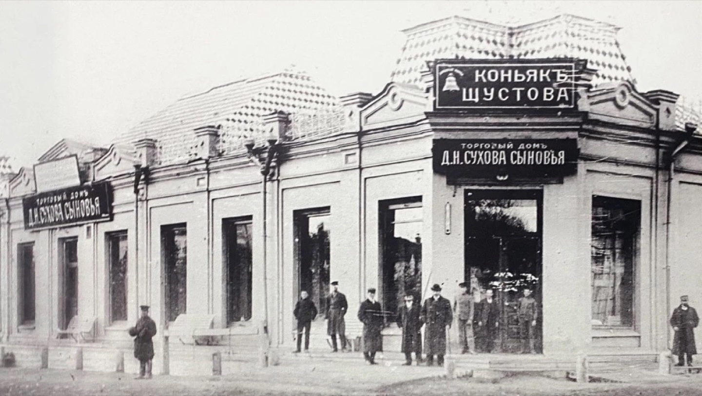
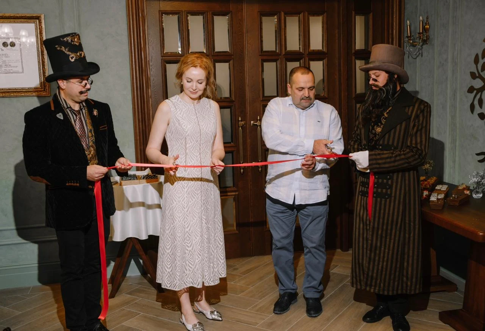
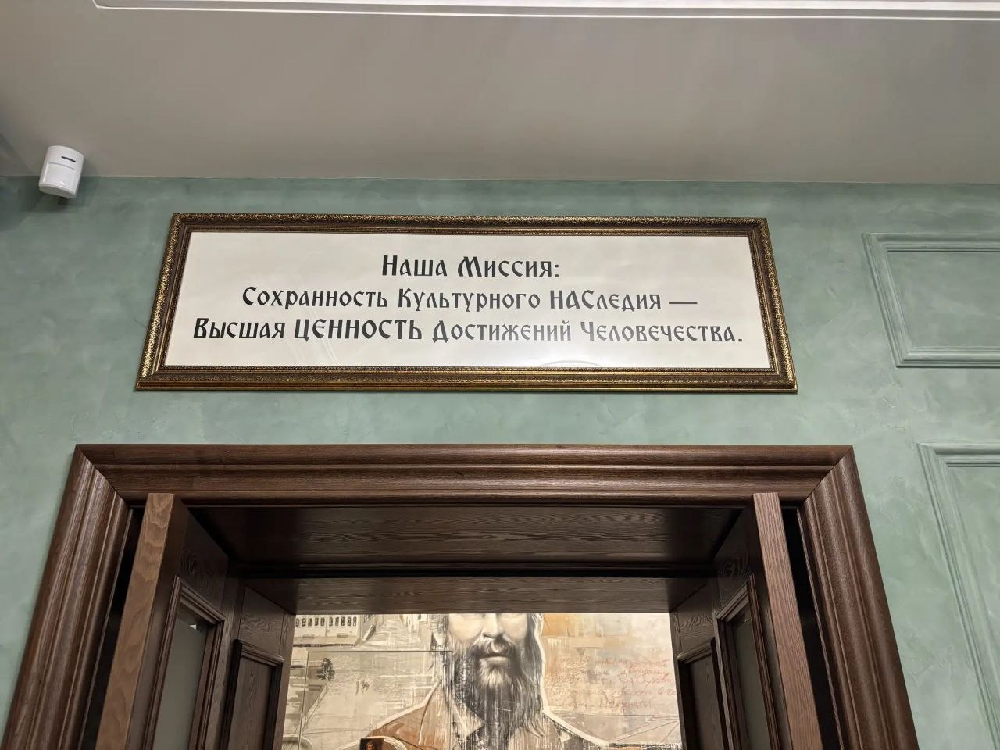
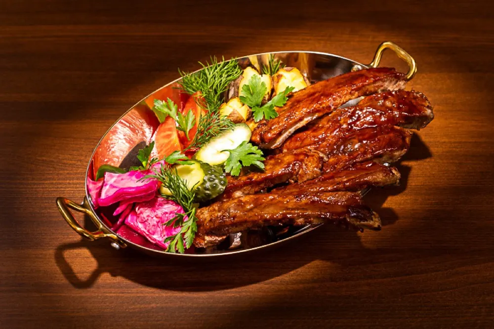

Стейк рибай из печи1 400 ₽ за 100 г
Барнаул, Льва Толстого, 31 · ежедневно 11:00–24:00
Барнаул · Льва Толстого, 31
В этом доме на улице Льва Толстого Суховы торговали тканями и чаем, а в советское время барнаульцы ходили сюда в кино. Когда здание начали восстанавливать, под штукатуркой открылись кирпичные своды, а под полом нашли монеты XVIII века. Сегодня в бывшем купеческом магазине работает ресторан ЛЮРАССА.
Наша Миссия:
«Сохранность Культурного НАСледия — Высшая ЦЕННОСТЬ Достижений Человечества».

С 2020 года
В августе 2020 года банк выставил на продажу соседний дом на Льва Толстого, 33. Лариса Харина, соучредитель ресторана ЛЮРАССА, вспоминает, что дом стоял полуразрушенным. Будущие владельцы решили его купить, хотя ещё не знали, что в нём откроют.
После покупки команда начала собирать сведения о прежних владельцах. К работе подключили историков, которые восстанавливали родословную Суховых. Из этой работы выросла идея ресторана, где можно узнать историю барнаульского купечества. Специалисты осмотрели жилой дом и решили, что места для ресторана там мало. Когда появилась возможность выкупить бывший магазин под номером 31, проект перенесли туда.
Труднее всего было восстановить просевший фундамент. Внутри раскрыли арочные проёмы и расчистили от старой штукатурки своды Монье. Это перекрытия из кирпича, уложенного дугами между металлическими балками. Сохранили форму окон, а подлинные дверные ручки, найденные в руинах, очистили, восстановили и вернули на двери.


Дмитрий Никифорович Сухов вырос в семье купца первой гильдии Никифора Трофимовича Сухова. Семья вела торговлю по всему краю и владела кирпичным, кожевенным и свечным производствами. В 1880–1890-е годы, когда Дмитрий возглавил семейное дело, Суховы стали одними из крупнейших предпринимателей Барнаула.
В 1882 году Дмитрия Сухова избрали городским головой. Он направлял своё жалованье на нужды города и вкладывал личные средства в открытие гимназии и устройство нового кладбища. Его сын Василий тоже стал городским головой. В неурожайном 1902 году он выделил три тысячи рублей из собственных средств на зерно для нуждающихся горожан.
XIX век
Так прежде называлась улица Льва Толстого. У Базарной площади усадьба Суховых занимала целый квартал. В доме под нынешним номером 31 семья торговала, а в соседнем, под номером 33, жила.

В магазин приходили за чаем, сахаром, тканями и готовым платьем. Здесь же купцы покупали у местных жителей сельскохозяйственную продукцию.
1917–1994
После революции здание национализировали. В разные годы здесь работали контора и магазин Центрального рабочего кооператива, оптовый магазин потребительских обществ, отделение милиции и торговая база. В 1938 году здесь открылся кинотеатр «Октябрь». В январе 1957 года в его зале впервые в Барнауле показали широкоэкранный фильм.
28 декабря 1994 года здание признали памятником культурного наследия регионального значения. В перечень памятников оно вошло как «Магазин Сухова».
Под старыми полами и слоями штукатурки нашли десятки монет, в том числе денгу 1748 года и сибирские монеты из колыванской меди. Рядом с ними обнаружили торговую пломбу, кафтанные застёжки, медный напёрсток и винные бутылки с клеймами барнаульских купцов.
Монеты проверили на подлинность. Сегодня они выставлены в музее ресторана. По этим находкам можно представить, чем люди торговали, как одевались и какими вещами пользовались в Барнауле до революции.
Медная монета времён Елизаветы Петровны. Самая старая находка в доме.
Её чеканили из колыванской меди, добытой на нынешнем Алтае, для обращения в Сибири.
Самая мелкая монета империи, ровно половина деньги.
Предметы из повседневной жизни купеческого дома.
Медная монета времён Николая I.
Чугунное литьё Кусинского завода: пожарное депо и птица Феникс. Печь в купеческом доме и грела, и украшала.
Свинцовой пломбой купцы опечатывали товар, чтобы в дороге его никто не тронул.
Самая поздняя монета из найденных: её отчеканили за год до революции.

Август 2025 года
Юрий Схоменко перерезает ленту на открытии ресторана в бывшем магазине Суховых.
Мы считаем сохранение культурного наследия одной из главных ценностей. В этом доме о прошлом рассказывают подлинные вещи и сама архитектура. Мы хотим, чтобы гости могли узнать историю Барнаула прямо здесь, в бывшем магазине Суховых.

В ресторане ЛЮРАССА печь топят берёзовыми дровами. В ней томят рёбра и ягнёнка, пекут хлеб, пироги и лепёшки.



 Кондитерская
Конфеты ручной работы и хлеб из нашей печи.
В кондитерскую
Кондитерская
Конфеты ручной работы и хлеб из нашей печи.
В кондитерскую
 Залы
Под хрустальными люстрами или за столом у камина.
Посмотреть залы
Залы
Под хрустальными люстрами или за столом у камина.
Посмотреть залы
 Банкеты
Отдельный зал для торжества до 80 гостей.
О банкетах
Банкеты
Отдельный зал для торжества до 80 гостей.
О банкетах
 Афиша
Музыкальные вечера и гастроэкскурсии по дому.
К афише
Афиша
Музыкальные вечера и гастроэкскурсии по дому.
К афише
Барнаул · ежедневно 11:00–24:00